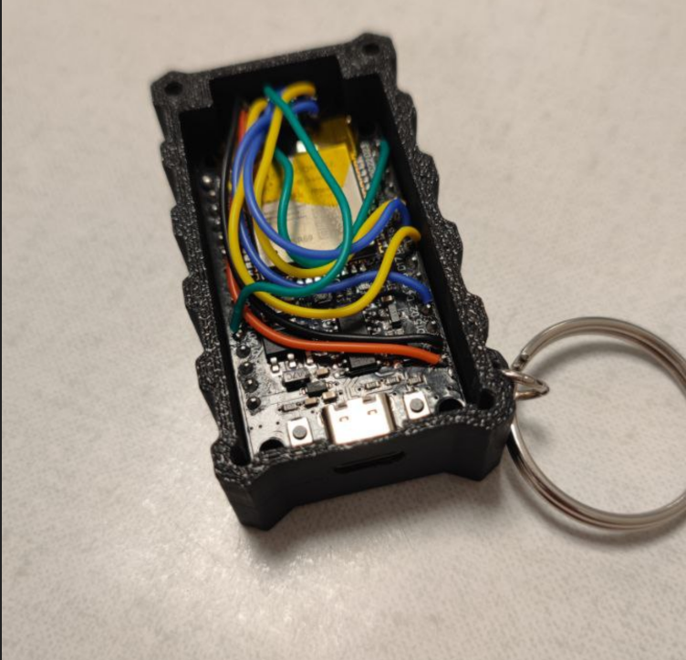

LoRa Over Usb
Wanted Goal
To have a case containing the hardware, capable of receiving and sending LoRa 443MHz signals at any time. So, a need for a small and highly portable case.
This project implements a bidirectional LoRa communication system using an ESP32 board equipped with a LoRa module. The primary goal is to listen to and display all received LoRa packets while allowing messages to be sent via LoRa at any time. The project is designed to operate without `syncWord` management, enabling universal reception of all LoRa messages.
For the build, i took the components I had on hand.
- Soc : ESP32 TYPE-C 30PIN
- LoRa module : Ra-01 LoRa SX1278 433M
Note
Be sure to check whether these frequencies can be used in your country. In my case, it's fine, but you should verify on the relevant website or regulatory body of your country, such as ibpt for belgium. For us, it's considered a non-specific Short-Range Device (SRD). We won't exceed 10 watts of power, and we will use less than 10% of the overall channel utilization, especially since this is for just one plant.

Hardware schematic + Firmware installation
The electrical schematic :
code : [here] if you're interested. Again this code was for testing purposes and it might be not very clean.
Create a little box
I launched Fusion 360, entered the dimensions to create a case that is small, highly portable, and very sturdy, so I can have it with me at all times.
Build
I simply merged everything together and tested it. Now, I have a case that can connect via serial, with a screen on Linux or the Serial USB Terminal app on Android, allowing me to send or receive LoRa messages at any time.
